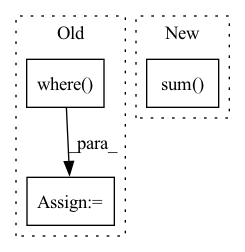

Pattern ID :36964
Before Change
sorted_score_indices_object_based = sorted_score_indices_object_based.cpu().numpy()
// Get index of first occurrence that fulfills the condition
rank_of_positive_subject_based = np.where( sorted_score_indices_subject_based == indice_of_pos_subject_based) [0][
0]
rank_of_positive_object_based = np.where(sorted_score_indices_object_based == indice_of_pos_object_based)[0][0]
After Change
np.greater(scores_of_corrupted_subjects, score_of_positive).sum()
rank_of_positive_object_based = scores_of_corrupted_objects.shape[0] - \
np.greater(scores_of_corrupted_objects, score_of_positive).sum()
return (
rank_of_positive_subject_based + 1,
rank_of_positive_object_based + 1,In pattern: SUPERPATTERN
Frequency: 3
Non-data size: 3
Instances Fragment ID: 105211905
Project Name: pykeen/pykeen
Commit Name: d0af5f9478b457b561f9e88d53fbe9a18f1c2672
Time: 2019-05-15
Author: lvermue@users.noreply.github.com
File Name: src/poem/evaluation/ranked_based_evaluator.py
M Class Name: RankBasedEvaluator
N Class Name: RankBasedEvaluator
M Method Name: _compute_rank(6)
N Method Name: _compute_rank(6)
M Parent Class: AbstractEvalutor
N Parent Class: AbstractEvalutor
M File Name: src/poem/evaluation/ranked_based_evaluator.py
N File Name: src/poem/evaluation/ranked_based_evaluator.py
M Start Line: 146
M End Line: 176
N Start Line: 143
N End Line: 157
Before Change
// sdp_term = torch.where(
// lo_cens, ones, (q + sdp)).log()
sdp_term = torch.where(lo_cens, zeros, x_ + F.softplus(sd-x_))
x_or_sd = torch.where( hi_cens, sd, x_)
log_delta_cdf = (
x_or_sd + diff_term - sdm_term - sdp_term
)
After Change
r |= {
// "min_sharpness": s.min(),
"max_sharpness": s.max(),
"mean_sharpness": (s*log_pi.exp()).sum( -1) .mean(),
// "min_entropy": ent.min(),
// "max_entropy": ent.max(),
"mean_cmp_entropy": ent.mean(), Fragment ID: 105211897
Project Name: intelligent-instruments-lab/iil-python-tools
Commit Name: 3cfb0feff3aa13a704a8a16302c1d7bbde37807f
Time: 2022-03-17
Author: victor.shepardson@gmail.com
File Name: notepredictor/notepredictor/distributions.py
M Class Name: CensoredMixtureLogistic
N Class Name: CensoredMixtureLogistic
M Method Name: forward(3)
N Method Name: forward(3)
M Parent Class: nn.Module
N Parent Class: nn.Module
M File Name: notepredictor/notepredictor/distributions.py
N File Name: notepredictor/notepredictor/distributions.py
M Start Line: 53
M End Line: 99
N Start Line: 54
N End Line: 86
Before Change
rs = np.random.RandomState(seed)
A_u = nx.adjacency_matrix(G).todense()
indexes = np.where( A_u < 1)
indexes = np.c_[indexes[0],indexes[1]]
neg_index = rs.choice(np.arange(len(indexes)), size=int(np.sum(A_u)))
neg_edges = indexes[neg_index].tolist()
len_val = int(prob_val*len(row))
len_test = int(prob_test*len(row))After Change
oberved_edges[i,1] = int(e[0])
oberved_weight[i] = A[e[1], e[0]]
oberved_edges = oberved_edges[np.sum( oberved_edges, axis=-1) >= 0]
oberved_weight = oberved_weight[oberved_weight >= 0]
datasets[ind] = {}
datasets[ind]["graph"] = torch.from_numpy(oberved_edges.T).long().to(device) Fragment ID: 105211896
Project Name: sherylhyx/pytorch_geometric_signed_directed
Commit Name: eeeffe159fa0bd2b54e276e7605f8aaa238d8202
Time: 2022-02-18
Author: xzhang15@wpi.edu
File Name: torch_geometric_signed_directed/utils/directed/directed_link_split.py
M Class Name: AnonimousClass
N Class Name: AnonimousClass
M Method Name: directed_link_class_split(8)
N Method Name: directed_link_class_split(8)
M Parent Class:
N Parent Class:
M File Name: torch_geometric_signed_directed/utils/directed/directed_link_split.py
N File Name: torch_geometric_signed_directed/utils/directed/directed_link_split.py
M Start Line: 104
M End Line: 168
N Start Line: 100
N End Line: 162